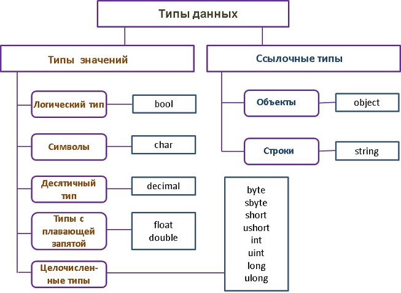

Типы данных
Как и во многих языках программирования, в C# есть своя система типов данных, которая используется для создания переменных. Тип данных определяет внутреннее представление данных, множество значений, которые может принимать объект, а также допустимые действия, которые можно применять над объектом.
В языке C# есть следующие примитивные типы данных:
- bool: хранит значение true или false (логические литералы). Представлен
системным
типом System.Boolean
12bool alive = true;bool isDead = false;
- byte: хранит целое число от 0 до 255 и занимает 1 байт. Представлен
системным типом System.Byte
12byte bit1 = 1;byte bit2 = 102;
- sbyte: хранит целое число от -128 до 127 и занимает 1 байт. Представлен
системным типом System.SByte
12sbyte bit1 = -101;sbyte bit2 = 102;
- short: хранит целое число от -32768 до 32767 и занимает 2 байта.
Представлен системным типом System.Int16
12short n1 = 1;short n2 = 102;
- ushort: хранит целое число от 0 до 65535 и занимает 2 байта. Представлен
системным типом System.UInt16
12ushort bit1 = 1;ushort bit2 = 102;
- int: хранит целое число от -2147483648 до 2147483647 и занимает 4 байта.
Представлен системным типом System.Int32. Все целочисленные
литералы по умолчанию представляют значения
типа int
123int a = 10;int b = 0b101; // бинарная форма b = 5int c = 0xFF; // шестнадцатеричная форма c = 255
- uint: хранит целое число от 0 до 4294967295 и занимает 4 байта.
Представлен системным типом System.UInt32
123uint a = 10;uint b = 0b101;uint c = 0xFF;
- long: хранит целое число от –9 223 372 036 854 775 808 до 9 223 372 036
854 775 807 и занимает 8 байт. Представлен системным типом System.Int64
123long a = -10;long b = 0b101;long c = 0xFF;
- ulong: хранит целое число от 0 до 18 446 744 073 709 551 615 и занимает 8
байт. Представлен системным типом System.UInt64
123ulong a = 10;ulong b = 0b101;ulong c = 0xFF;
- char: хранит одиночный символ в кодировке Unicode и занимает 2 байта.
Представлен системным типом System.Char. Этому типу соответствуют
символьные литералы
123char a = 'A';char b = '\x5A';char c = '\u0420';
- string: хранит набор символов Unicode. Представлен системным типом
System.String. Этому типу соответствуют символьные литералы
123string hello = "Hello";string world = "world";
- object: может хранить значение любого типа данных и занимает 4 байта на
32-разрядной платформе и 8 байт на 64-разрядной платформе. Представлен системным типом System.Object,
который является базовым для всех других типов и классов .NET.
123object a = 22;object b = 3.14;object c = "hello code";
Например, определим несколько переменных разных типов и выведем их значения на консоль:
|
1
2
3
4
5
6
7
8
9
10
11
12
13
14
15
16
17
18
19
20
|
using
System
namespace
HelloApp
{
class
Program
{
static void
Main(string[]
args)
{
string name = "Tom";
int age = 33;
bool isEmployed = false;
double weight = 78.65;
Console.WriteLine($"Имя: {name}");
Console.WriteLine($"Возраст: {age}");
Console.WriteLine($"Вес: {weight}");
Console.WriteLine($"Работает: {isEmployed}");
}
}
}
|
Для вывода данных на консоль здесь применяется интерполяция: перед строкой ставится знак $ и после этого мы можем вводить в строку в фигурных скобках значения переменных. Консольный вывод программы:
Использование суффиксов
При присвоении значений надо иметь в виду следующую тонкость: все вещественные литералы рассматриваются как значения типа double. И чтобы указать, что дробное число представляет тип float или тип decimal, необходимо к литералу добавлять суффикс: F/f - для float и M/m - для decimal.
|
1
2
3
4
5
|
float a =
3.14F;
float b =
30.6f;
decimal c =
1005.8M;
decimal d =
334.8m;
|
Подобным образом все целочисленные литералы рассматриваются как значения типа int. Чтобы явным образом указать, что целочисленный литерал представляет значение типа uint, надо использовать суффикс U/u, для типа long - суффикс L/l, а для типа ulong - суффикс UL/ul:
|
1
2
3
|
uint a =
10U;
float b =
20L;
decimal c =
30UL;
|
Использование системных типов
Выше при перечислении всех базовых типов данных для каждого упоминался системный тип. Потому что название встроенного типа по сути представляет собой сокращенное обозначение системного типа. Например, следующие переменные будут эквивалентны по типу:
|
1
2
|
int a =
4;
System.Int32 b =
4;
|
Неявная типизация
Ранее мы явным образом указывали тип переменных, например, int x;. И компилятор при запуске уже знал, что x хранит целочисленное значение.
Однако мы можем использовать и модель неявной типизации:
|
1
2
3
4
5
|
var hello =
"Hell to World";
var c =
20;
Console.WriteLine(c.GetType().ToString());
Console.WriteLine(hello.GetType().ToString());
|
Для неявной типизации вместо названия типа данных используется ключевое слово var. Затем уже при компиляции компилятор сам выводит тип данных исходя из присвоенного значения. В примере выше использовалось выражение Console.WriteLine(c.GetType().ToString());, которое позволяет нам узнать выведенный тип переменной с. Так как по умолчанию все целочисленные значения рассматриваются как значения типа int, то поэтому в итоге переменная c будет иметь тип int или System.Int32
Эти переменные подобны обычным, однако они имеют некоторые ограничения.
Во-первых, мы не можем сначала объявить неявно типизируемую переменную, а затем инициализировать:
|
1
2
3
4
5
6
7
|
// этот код работает
int a;
a = 20;
// этот код не работает
var c;
c = 20;
|
Во-вторых, мы не можем указать в качестве значения неявно типизируемой переменной null:
|
1
2
|
// этот код работает
var c = null;
|
Так как значение null, то компилятор не сможет вывести тип данных.
double или decimal
Из выше перечисленного списка типов данных очевидно, что если мы хотим использовать в программе числа до 256, то для их хранения мы можем использоват переменные типа byte. При использовании больших значений мы можем взять тип short, int, long. То же самое для дробных чисел - для обычных дробных чисел можно взять тип float, для очень больших дробных чисел - тип double. Тип decimal здесь стоит особняком в том плане, что несмотря на большую разрядность по сравнению с типом double, тип double может хранить большее значение. Однако значение decimal может содержать до 28 знаков после запятой, тогда как значение типа double - 15-16 знаков после запятой.
Decimal чаще находит применение в финансовых вычислениях, тогда как double - в математических операциях. Общие различия между этими двумя типами можно выразить следующей таблицей:
| Decimal | Double | |
|---|---|---|
| Наибольшее значение | ~1028 | ~10308 |
| Наименьшее значение (без учета нуля) | 10-28 | ~10-323 |
| Знаков после запятой | 28 | 15-16 |
| Разрядность | 16 байт | 8 байт |
| Операций в секунду | сотни миллионов | миллиарды |